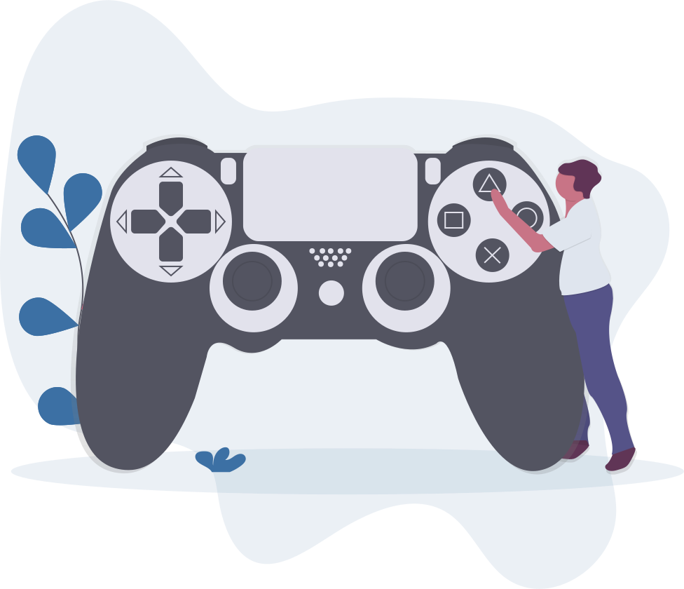

Coding
I started coding at the age of 15 when i seen C++ for the first time and after that my interest developed in computer programming. I made this website at the age of 16 when i was learning Web Development.
Gaming
Asphalt 9 is one of my favourite racing game. I love playing racing games, they releases all of my tiredness,stress and make me feel energetic.